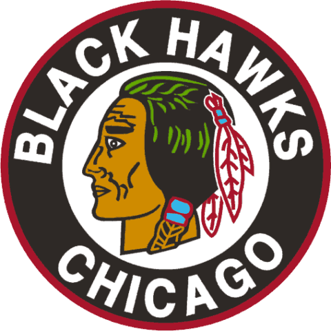

The Chicago Blackhawks
The Chicago Blackhawks were founded in 1926, and are also one of the 6 original teams in the NHL. The Blackhawks were the first NHL team to average more than 20,000 fans per game attendance in 1994, when they averaged 20,818 in the brand new United Center. They shared this stadium with the Chicago Bulls for over 20 years.The Hawks have now won 5 National Hockey League championships. Bringing the Stanley cup home in 1934, 1938, 1961, 2010, and of course, 2013 the year they beat the bruins for the stanley cup.
